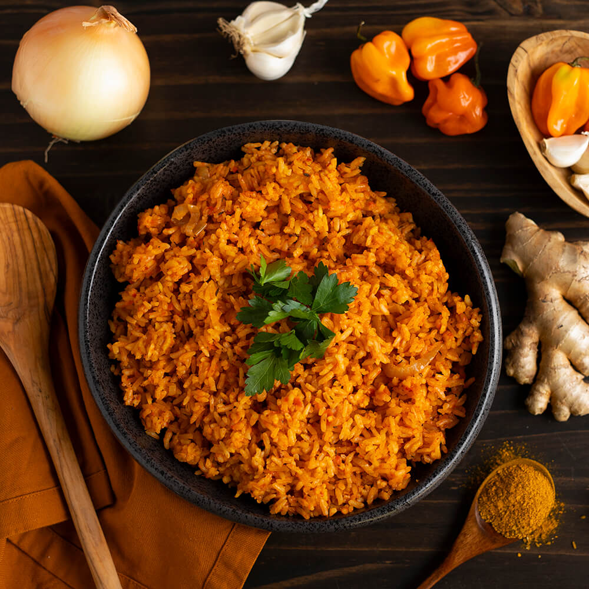
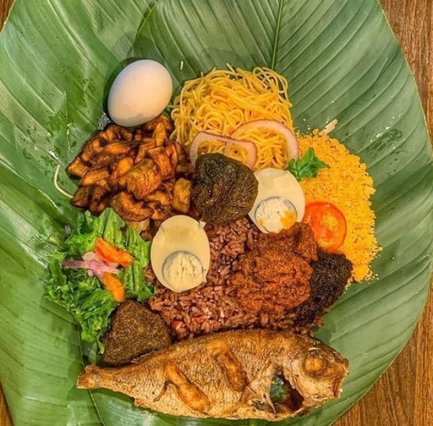
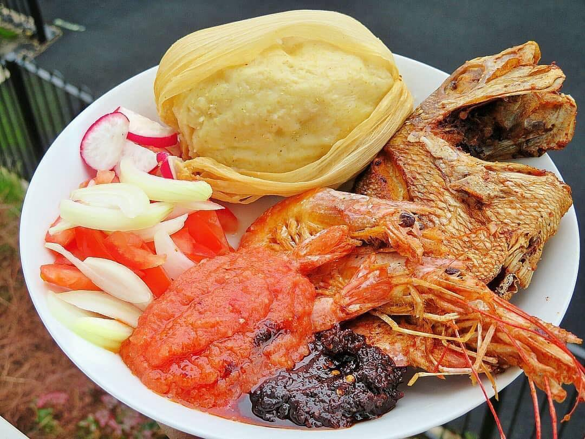
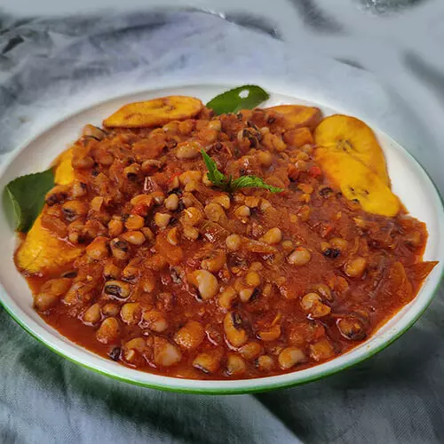
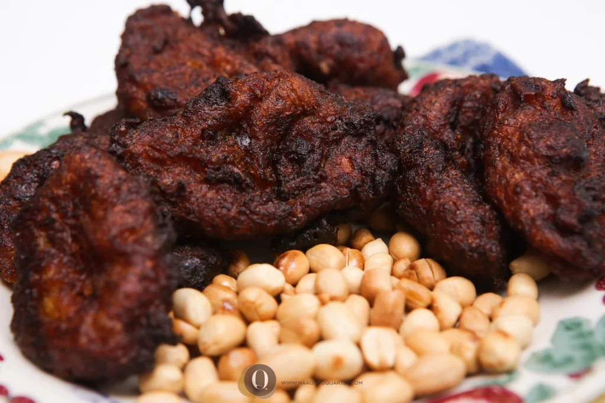
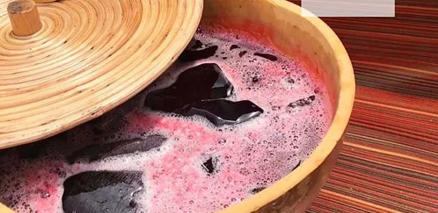

Food of Accra

Jollof Rice
Jollof Rice is a famous West African dish made with tomatoes, spices, and rice.

Waakye
A beloved Ghanaian breakfast dish made with rice and beans.

Banku & Tilapia
A fermented corn dish paired with grilled tilapia and spicy sauce.

Kenkey & Fish
A traditional fermented maize dish served with fish and hot pepper sauce.

Fufu & Light Soup
A staple dish made from pounded cassava, served with light soup.

Red Red
Fried plantains served with beans stew.

Kakro
Delicious fried plantain balls.

Sobolo
A refreshing hibiscus drink.